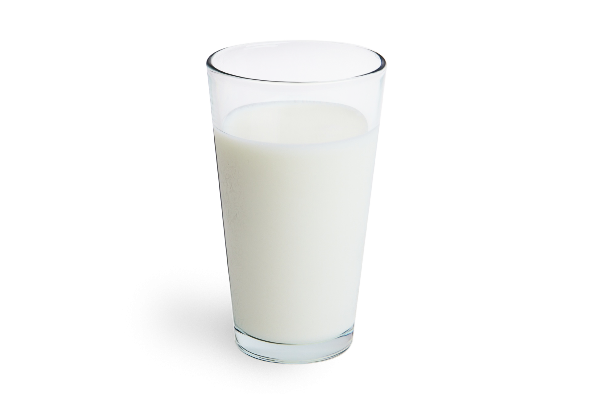

BEZKOMPROMISOWA JAKOŚĆ
Dlaczego lody Kroczek są wyjątkowe?

🥛 100% Natury i Tradycji
Opieramy się na recepturze z lat 50-tych. Nasza idealna baza to jaja od kur z wolnego wybiegu, krowie mleko i śmietana. Zero konserwantów!
🥇 Nagradzane, Oryginalne Smaki
Jesteśmy zdobywcami m.in. Złotego Medalu targów NATURA FOOD. Zaskoczymy Cię autentycznym smakiem miodu, świeżej bazylii, słonego karmelu, a dla odważnych – kawy i chilli.

🥕 Wegańska Siła Warzyw i Owoców
Nasze wegańskie sorbety to w ponad 50% czyste warzywa i owoce uzupełnione błonnikiem. Odkryj niepowtarzalne dary natury: pietruszkę, szpinak, seler z jabłkiem czy pokrzywę z imbirerem.